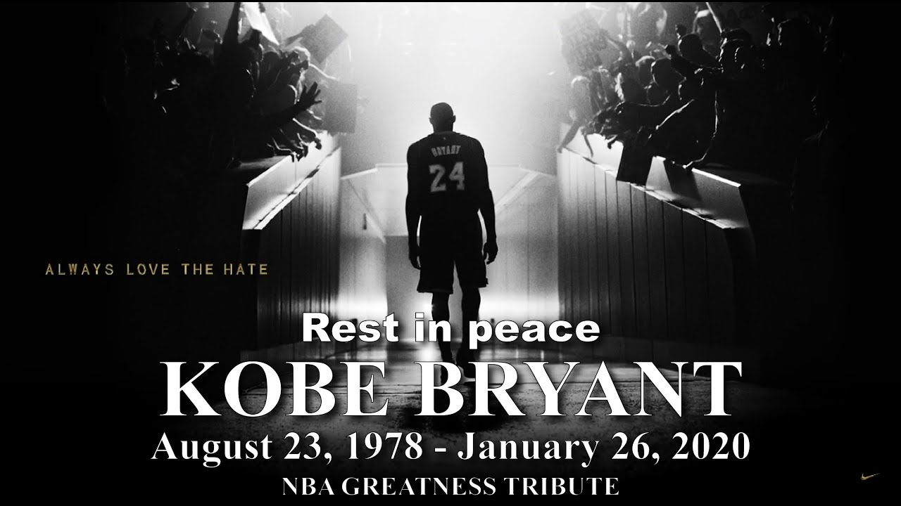
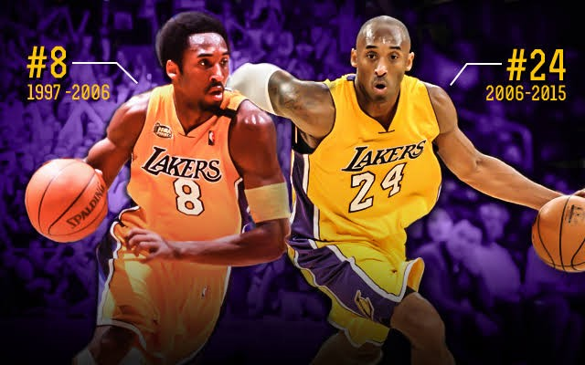

Kobe Bryant
昨晚给一位研究生小朋友辅导Latex相关的操作到很晚，直到凌晨2点才睡。一觉醒来，在朋友圈的第一条动态为

在脑中的第一个感觉是”what 什么d情况？”。
说实话，虽然知道黑白的配图是什么意思，但还是立马打开虎扑去看看什么情况，铺天盖地的新闻，”Kobe died in helicopter crash.” 。但还是不怎么相信，整个早晨一直在刷着新闻，整个人的心情是震惊且不敢相信的，但随着ESPN以及NBA的确认的报道，慢慢地承认了这一事实。
说实话自己不是科比的粉丝，也不会像网上说的那样Kobe是我的青春。但当自己边看新闻，眼眶也不禁慢慢的湿润了。可能他作为超级巨星，不是我的青春却贯穿了一个作为篮球爱好者的青春。于我而言对他更多的是尊重，当姚明还在NBA打球时，每每看到火箭与湖人的比赛，科比拿球，从心底觉得”害怕”，这也导致我对于他相对不那么喜欢，至于恨那谈不上。如今随着科比的意外，一切都随风吧。不知道从何时开始，发现自己很容易流泪，小到因自己苦等一年签证，终于下签而落泪，大到最近国内武汉的冠状病毒肆虐而踌躇不已。似乎每一件或大或小的事情都能牵扯自己敏感的神经。可能自己慢慢”老了吧”。世事难料，你永远不知道明天和意外谁先发生，逝者已逝，尊重生命的美好，珍惜眼前人吧。
最后引用JR的一段话，”洛杉矶的瀑布逆流而上，西班牙人长发飘扬，大鲨鱼还是青涩模样，斯特恩回到选秀大会上，来自费城的13顺位即将登场”。
